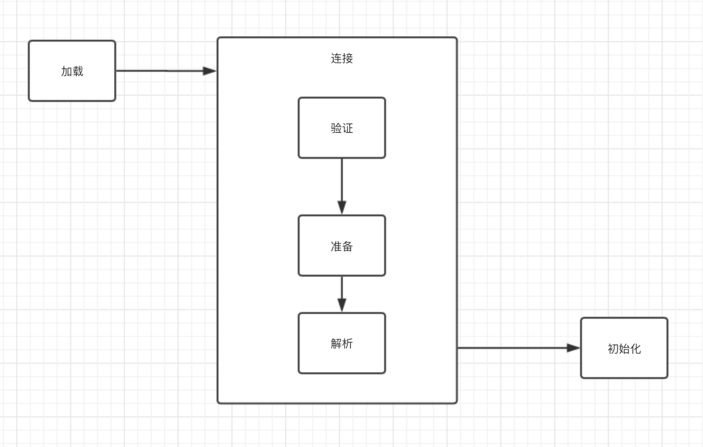
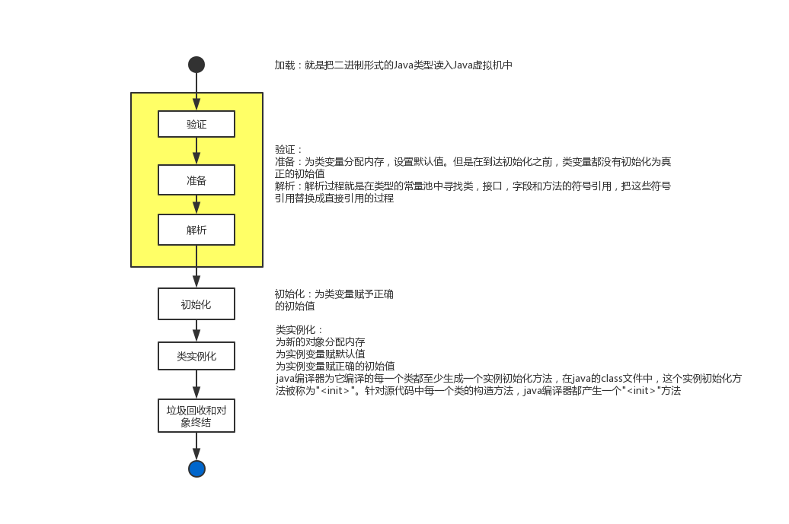
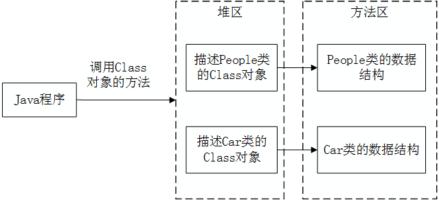
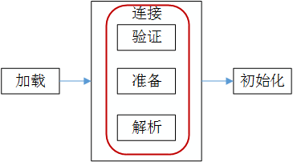
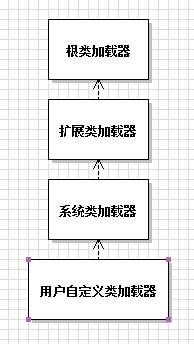
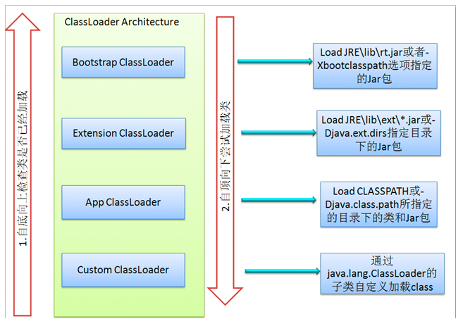
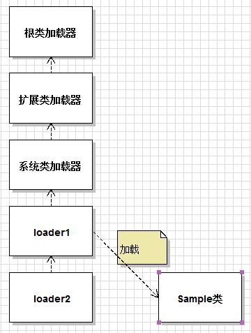
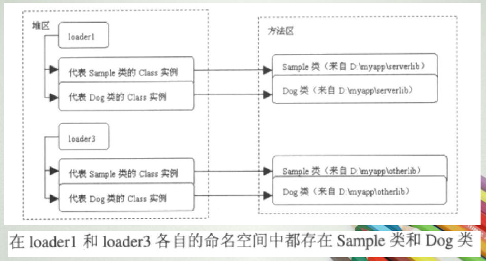
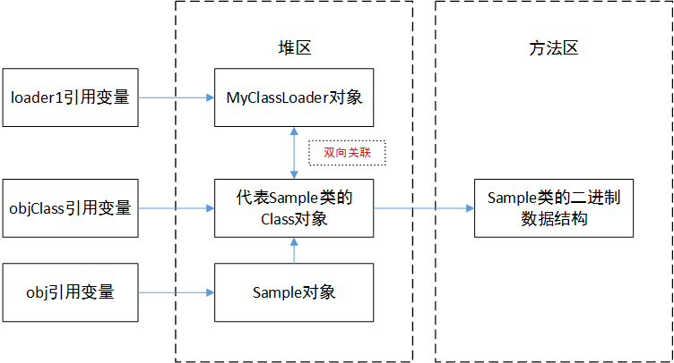

概述
Java虚拟机与程序的生命周期
- 一个运行时的Java虚拟机(JVM)负责运行一个Java程序。
- 当启动一个Java程序时，一个虚拟机实例诞生；当程序关闭退出，这个虚拟机实例也就随之消亡。
- 如果在同一台计算机上同时运行多个Java程序，将得到多个Java虚拟机实例，每个Java程序都运行于它自己的Java虚拟机实例中。
在如下几种情况下，Java虚拟机将结束生命周期：
- 1.执行了System.exit()方法
- 2.程序正常执行结束
- 3.程序在执行过程中遇到了异常或错误而异常终止
- 4.由于操作系统出现错误而导致Java虚拟机进程终止
类加载器ClassLoader
.java文件编译生成.class文件，需要装载到内存里面执行，装载到内存里面这个事情就是由类加载器完成的。
程序执行之前，会进行类的加载、连接与初始化

1.加载
- 查找并加载类的二进制数据。
- 参见：类的加载
2.连接
- 连接又分为三个步骤：
- -验证：确保被加载的类的正确性
- -准备：为类的
静态变量分配内存，并将其初始化为默认值 - -解析：
把类中的符号引用转换为直接引用
参见:连接过程：验证、准备、解析初始化
- 为类的静态变量赋予正确的
初始值，即在程序里为静态变量指定的初始值，或静态代码块中的赋值操作。 - 静态代码块是从上到下顺序执行的，可以对一个静态变量多次赋值，最后的结果为静态变量的初始值。
- 参见类的初始化

类的加载
类的加载指的是将类的.class文件中的二进制数据读入到内存中，将其放在运行时数据区的方法区内，然后在堆区创建一个java.lang.Class对象（规范并未说明Class对象位于哪里，HotSpot将其放到了方法区中），用来封装类在方法区内的数据结构。
- 加载.class文件的方式
- 从本地系统直接加载
- 通过网络下载.class文件
- 从zip，jar等归档文件中加载.class文件
- 从专有数据库中加载.class文件
将java源文件动态编译成.class文件类的加载的最终产品是位于堆区中的Class对象。
Class对象封装了类在方法区内的数据结构，并且向Java程序员提供了访问方法区内的数据结构的接口。

类加载器
有两种类型的类加载器
- 1.java虚拟机自带的加载器
- 根类加载器(Bootstrap)
- 扩展类加载器(Extension)
- 系统(应用)类加载器(System)
后两种加载器是Java实现的，根类加载器是C++写的，程序员无法在Java代码中获得该类。
- 2.用户自定义的类加载器
java.lang.ClassLoader的子类- 用户可以定制类的加载方式
类加载并不需要等到某个类被”首次主动使用”时在加载它
JVM规范允许类加载器在预料某个类将要被使用时就预先加载它，如果在预先加载的过程中遇到了.class文件缺失或存在错误，类加载器必须在程序首次主动使用该类时才报告错误(LinkageError错误)。如果这个类一直没有被程序主动使用，那么类加载器就不会报告错误
连接过程：验证、准备、解析
类被加载后，就进入连接阶段。

连接就是将已经读入到内存的类的二进制数据合并到虚拟机的运行时环境中去。
连接阶段三个步骤：验证、准备和解析。
类的验证
类的验证内容：
1.类文件的结构检查
确保类文件遵从Java类文件的固定格式。2.语义检查
确保类本身符合Java语言的语法规定，比如验证final类型的类没有子类，以及final类型的方法没有被覆盖。
注意，语义检查的错误在编译器编译阶段就会通不过，但是如果有程序员通过非编译的手段生成了类文件，其中有可能会含有语义错误，此时的语义检查主要是防止这种没有编译而生成的class文件引入的错误。
- 3.字节码验证
确保字节码流可以被Java虚拟机安全地执行。
字节码流代表Java方法(包括静态方法和实例方法)，它是由被称作操作码的单字节指令组成的序列，每一个操作码后都跟着一个或多个操作数。
字节码验证步骤会检查每个操作码是否合法，即是否有着合法的操作数。
- 4.二级制兼容性的验证
确保相互引用的类之间的协调一致。
例如，在Worker类的gotoWork()方法中会调用Car类的run()方法，Java虚拟机在验证Worker类时，会检查在方法区内是否存在Car类的run()方法，假如不存在(当Worker类和Car类的版本不兼容就会出现这种问题)，就会抛出NoSuchMethodError错误。
类的准备
在准备阶段，Java虚拟机为类的静态变量分配内存，并设置默认的初始值。
例如对于以下Sample类，在准备阶段，将为int类型的静态变量a分配4个字节的内存空间，并且赋予默认值0，为long类型的静态变量b分配8个字节的内存空间，并且赋予默认值0。1
2
3
4
5
6
7
8
9public class Sample {
private static int a = 1;
private static long b;
static {
b = 2;
}
}
类的解析
在解析阶段，Java虚拟机会把类的二级制数据中的符号引用替换为直接引用。
例如在Worker类的gotoWork()方法中会引用Car类的run()方法。1
2
3public void gotoWork() {
car.run();// 这段代码在Worker类的二进制数据中表示为符号引用
}
在Worker类的二进制数据中，包含了一个对Car类的run()方法的符号引用，它由run()方法的全名和相关描述符组成。
在解析阶段，Java虚拟机会把这个符号引用替换为一个指针，该指针指向Car类的run()方法在方法区内的内存位置，这个指针就是直接引用。
类的初始化
在初始化阶段，Java虚拟机执行类的初始化语句，为类的静态变量赋予初始值。
在程序中，静态变量的初始化有两种途径：
- 1.在静态变量的声明处进行初始化；
- 2.在静态代码块中进行初始化。
没有经过显式初始化的静态变量将原有的值。
例如在以下代码中，静态变量a和b都被显式初始化，而静态变量c没有被显式初始化，它将保持默认值0。1
2
3
4
5
6
7
8
9public class Sample {
private static int a = 1; //在静态变量的声明处进行初始化
public static long b;
public static long c;
static {
b = 2; //在静态代码块中进行初始化
}
...
}
代码例子：1
2
3
4
5
6
7
8
9
10
11
12
13
14
15
16
17
18
19
20
21
22
23
24
25
26
27
28public class Singleton {
public static void main(String[] args) {
SingletonTest singletonTest = SingletonTest.getInstance();
System.out.println("counter1:" + SingletonTest.counter1);
System.out.println("counter2:" + SingletonTest.counter2);
}
}
class SingletonTest {
public static int counter1;
public static int counter2 = 0;
private static SingletonTest singleton = new SingletonTest();
private SingletonTest() {
counter1++;
counter2++;
}
public static SingletonTest getInstance() {
return singleton;
}
}
输出结果：
counter1:1
counter2:1
改变一下代码1
2
3
4
5
6
7
8
9
10
11
12
13
14
15
16
17
18
19
20
21
22
23
24
25
26
27
28
29
30
31public class Singleton {
public static void main(String[] args) {
SingletonTest singletonTest = SingletonTest.getInstance();
System.out.println("counter1:" + SingletonTest.counter1);
System.out.println("counter2:" + SingletonTest.counter2);
}
}
class SingletonTest {
public static int counter1;
private static SingletonTest singleton = new SingletonTest();
private SingletonTest() {
counter1++;
counter2++;
}
public static int counter2 = 0; //将这行代码移动到构造方法之后
public static SingletonTest getInstance() {
return singleton;
}
}
// 输出结果
counter1:1
counter2:0
可见将生成对象的语句放在两个位置，输出是不一样的(相应位置的输出已在程序注释中标明)。
这是因为初始化语句是按照顺序来执行的。
静态变量的声明语句，以及静态代码块都被看做类的初始化语句，Java虚拟机会按照初始化语句在类文件中的先后顺序来依次执行它们。
类的初始化步骤
- 1.假如这个类还没有被加载和连接，那就先进行
加载和连接。 - 2.假如类存在直接的父类，并且这个父类还没有被初始化，那就
先初始化直接的父类。 - 3.假如类中存在初始化语句，那就
依次执行这些初始化语句。
类的初始化时机
Java程序对类的使用方式可以分为两种
- -主动使用(七种)
- 创建类的实例
- 访问某个类或接口的静态变量，或者对该静态变量赋值
- 调用类的静态方法
- 反射(如Class.forName(“com.tet.Test””))
- 初始化一个类的子类
- 当一个类在初始化时，要求其父类全部已经初始化完毕
- java虚拟机启动时被标明为类的类(java test)
- JDK 1.7 开始提供的动态语言支持：
java.lang.invoke.MethodHandle实例的解析结果REF_getStatic,REF_putStatic,REF_invokeStatic句柄对应的类没有初始化则初始化- java.lang.invoke.MethodHandle实例的解析结果REF_getStatic,REF_putStatic,REF_invokeStatic句柄对应的类没有初始化则初始化
除了以上七种情况，其他使用java类的方法都被看作是对类的被动使用，都不会导致类的初始化
- java.lang.invoke.MethodHandle实例的解析结果REF_getStatic,REF_putStatic,REF_invokeStatic句柄对应的类没有初始化则初始化
- -被动使用
接口的特殊性
当Java虚拟机初始化一个类时，要求它的所有父类都已经被初始化，但是这条规则并不适用于接口 - 在初始化一个类时，并不会先初始化它所实现的接口。
- 在初始化一个接口时，并不会先初始化它的父接口
因此，一个父接口并不会因为它的子接口或者实现类的初始化而初始化。只有当程序首次使用特定接口的静态变量时，才会导致该接口的初始化
final类型的静态变量
final类型的静态变量是编译时常量还是变量，会影响初始化语句块的执行。
如果一个静态变量的值是一个编译时的常量，就不会对类型进行初始化(类的static块不执行)；
如果一个静态变量的值是一个非编译时的常量，即只有运行时会有确定的初始化值，则就会对这个类型进行初始化(类的static块执行)。1
2
3
4
5
6
7
8
9
10
11
12
13
14
15
16
17
18
19
20
21
22
23
24class FinalTest1 {
public static final int x = 6 / 3; // 编译时期已经可知其值为2，是常量
// 类型不需要进行初始化
static {
System.out.println("static block in FinalTest1");
// 此段语句不会被执行，即无输出
}
}
class FinalTest2 {
public static final int x = new Random().nextInt(100);// 只有运行时才能得到值
static {
System.out.println("static block in FinalTest2");
// 会进行类的初始化，即静态语句块会执行，有输出
}
}
public class InitTest {
public static void main(String[] args) {
System.out.println("FinalTest1: " + FinalTest1.x);
System.out.println("FinalTest2: " + FinalTest2.x);
}
}
主动使用的归属明确性
只有当程序访问的静态变量或静态方法确实在当前类或当前接口中定义时，才可以认为是对类或接口的主动使用。1
2
3
4
5
6
7
8
9
10
11
12
13
14
15
16
17
18
19
20
21
22
23
24
25
26
27
28
29class Parent {
static int a = 3;
static {
System.out.println("Parent static block");
}
static void doSomething() {
System.out.println("do something");
}
}
class Child extends Parent {
static {
System.out.println("Child static block");
}
}
public class ParentTest {
public static void main(String[] args) {
System.out.println("Child.a: " + Child.a);
Child.doSomething();
// Child类的静态代码块没有执行，说明Child类没有初始化
// 这是因为主动使用的变量和方法都是定义在Parent类中的
}
}
ClassLoader类
调用ClassLoader类的loadClass()方法加载一个类，并不是对类的主动使用，不会导致类的初始化。1
2
3
4
5
6
7
8
9
10
11
12
13
14
15
16
17
18
19class CL {
static {
System.out.println("static block in CL");
}
}
public class ClassLoaderInitTest {
public static void main(String[] args) throws Exception {
ClassLoader loader = ClassLoader.getSystemClassLoader();
Class<?> clazz = loader.loadClass("com.bogle.classloader.CL");
// loadClass方法加载一个类，并不是对类的主动使用，不会导致类的初始化
System.out.println("----------------");
clazz = Class.forName("com.bogle.classloader.CL");
}
}
类加载器的父委托机制
类加载器
类加载器用来把类加载到Java虚拟机中。
类加载器的类型
有两种类型的类加载器
- java虚拟机自带的加载器
- 根类加载器(Bootstrap)
- 扩展类加载器(Extension)
- 系统(应用)类加载器(System)
- 用户自定义的类加载器
1.根(Bootstrap)类加载器：
该加载器没有父加载器。
它负责加载虚拟机的核心类库，如java.lang.*等。
根类加载器从系统属性sun.boot.class.path所指定的目录中加载类库。
根类加载器的实现依赖于底层操作系统，属于虚拟机的实现的一部分，它并没有继承java.lang.ClassLoader类，它是用C++写的。2.扩展(Extension)类加载器：
它的父加载器为根类加载器。
它从java.ext.dirs系统属性所指定的目录中加载类库，或者从JDK的安装目录的jre\lib\ext子目录(扩展目录)下加载类库，如果把用户创建的JAR文件放在这个目录下，也会自动由扩展类加载器加载。
扩展类加载器是纯Java类，是java.lang.ClassLoader类的子类。3.系统(System)类加载器：
也称为应用类加载器，它的父加载器为扩展类加载器。
它从环境变量classpath或者系统属性java.class.path所指定的目录中加载类，它是用户自定义的类加载器的默认父加载器。
系统类加载器是纯Java类，是java.lang.ClassLoader类的子类。注意：这里的父加载器概念并不是指类的继承关系，子加载器不一定继承了父加载器（其实是组合的关系）。
用户自定义类加载器
除了以上虚拟机自带的类加载器以外，用户还可以定制自己的类加载器(User-defined Class Loader)。
Java提供了抽象类java.lang.ClassLoader，所有用户自定义的类加载器都应该继承ClassLoader类。


类加载的父委托机制
从JDK 1.2版本开始，类的加载过程采用父亲委托机制，这种机制能更好地保证Java平台的安全。
在父委托机制中，除了Java虚拟机自带的根类加载器以外，其余的类加载器都有且只有一个父加载器，各个加载器按照父子关系形成了树形结构。
当Java程序请求加载器loader1加载Sample类时，loader1首先委托自己的父加载器去加载Sample类，若父加载器能加载，则由父加载器完成加载任务，否则才由loader1本身加载Sample类。
说明具体过程的一个例子：

loader2首先从自己的命名空间中查找Sample类是否已经被加载，如果已经加载，就直接返回代表Sample类的Class对象的引用。
如果Sample类还没有被加载，loader2首先请求loader1代为加载，loader1再请求系统类加载器代为加载，系统类加载器再请求扩展类加载器代为加载，扩展类加载器再请求根类加载器代为加载。
若根类加载器和扩展类加载器都不能加载，则系统类加载器尝试加载，若能加载成功，则将Sample类所对应的Class对象的引用返回给loader1，loader1再返回给loader2，从而成功将Sample类加载进虚拟机。
若系统加载器不能加载Sample类，则loader1尝试加载Sample类，若loader1也不能成功加载，则loader2尝试加载。
若所有的父加载器及loader2本身都不能加载，则抛出ClassNotFoundException异常。
总结下来就是：
每个加载器都优先尝试用父类加载，若父类不能加载则自己尝试加载；若成功则返回Class对象给子类，若失败则告诉子类让子类自己加载。所有都失败则抛出异常。
1 | Class.getClassLoader() |
定义类加载器和初始类加载器
若有一个类加载器能成功加载Sample类，那么这个类加载器被称为定义类加载器。
所有能成功返回Class对象的引用的类加载器(包括定义类加载器，即包括定义类加载器和它下面的所有子加载器)都被称为初始类加载器。
假设loader1实际加载了Sample类，则loader1为Sample类的定义类加载器，loader2和loader1为Sample类的初始类加载器。
父子关系
需要指出的是，加载器之间的父子关系实际上指的是加载器对象之间的包装关系，而不是类之间的继承关系。
一对父子加载器可能是同一个加载器类的两个实例，也可能不是。
在子加载器对象中包装了一个父加载器对象。
例如loader1和loader2都是MyClassLoader类的实例，并且loader2包装了loader1，loader1是loader2的父加载器。
当生成一个自定义的类加载器实例时，如果没有指定它的父加载器(ClassLoader构造方法无参数)，那么系统类加载器就将成为该类加载器的父加载器。
父委托机制优点
父亲委托机制的优点是能够提高软件系统的安全性。
因为在此机制下，用户自定义的类加载器不可能加载应该由父加载器加载的可靠类，从而防止不可靠甚至恶意的代码代替由父加载器加载的可靠代码。
例如，java.lang.Object类总是由根类加载器加载，其他任何用户自定义的类加载器都不可能加载含有恶意代码的java.lang.Object类。
命名空间
每个类加载器都有自己的命名空间，命名空间由该加载器及所有父加载器所加载的类组成。
在同一个命名空间中，不会出现类的完整名字(包括类的包名)相同的两个类。
在不同的命名空间中，有可能会出现类的完整名字(包括类的包名)相同的两个类。
运行时包
由同一类加载器加载的属于相同包的类组成了运行时包。
决定两个类是不是属于同一个运行时包，不仅要看它们的包名是否相同，还要看定义类加载器是否相同。
只有属于同一运行时包的类才能互相访问包可见(即默认访问级别)的类和类成员。
这样的限制能避免用户自定义的类冒充核心类库的类，去访问核心类库的包可见成员。
假设用户自己定义了一个类java.lang.Spy，并由用户自定义的类加载器加载，由于java.lang.Spy和核心类库java.lang.*由不同的类加载器加载，它们属于不同的运行时包，所以java.lang.Spy不能访问核心类库java.lang包中的包可见成员。
自定义类加载器 父委托机制和命名空间的再讨论
创建用户自定义的类加载器
要创建用户自定义的类加载器，只需要扩展java.lang.ClassLoader类，然后覆盖它的findClass(String name)方法即可，该方法根据参数指定的类的名字，返回对应的Class对象的引用。
自定义类加载器的例子
1 | public class MyClassLoader extends ClassLoader { |
其中Sample：1
2
3
4
5
6
7
8
9
10
11
12public class Sample {
public int v1 = 1;
public Sample() {
System.out.println("Sample is loaded by: "
+ this.getClass().getClassLoader());
// 主动使用Dog类
new Dog();
}
}
Dog类：1
2
3
4
5
6
7public class Dog {
public Dog() {
System.out.println("Dog is loaded by: "
+ this.getClass().getClassLoader());
}
}
例子演示过程略，尝试把class文件放在不同的路径下，看输出或者报错结果。
主要结论就是验证了父亲委托机制。
采用loader1的时候由于其父类是系统类加载器(也即应用类加载器)，所以如果可以在classpath中找到目标.class文件，则定义类加载器是系统类加载器，输出类似：
sun.misc.Launcher$AppClassLoader@7448bc3d
每个类加载器都有自己的命名空间，命名空间由该加载器及所有父加载器所加载的类组成。

在Sample类中主动使用了Dog类，当执行Sample类的构造方法中的new Dog()语句时，Java虚拟机需要先加载Dog类，到底用哪个类加载器加载呢？
从打印结果可以看出，Java虚拟机会用Sample类的定义类加载器去加载Dog类，加载过程也同样采用父亲委托机制。
如果Sample类首次主动使用Dog时，Sample类的加载器及它的父加载器都无法加载Dog类，将会抛出找不到文件的异常。
不同类加载器的命名空间关系
同一个命名空间内的类是相互可见的，即可以互相访问。
子加载器的命名空间包含所有父加载器的命名空间。
因此由子加载器加载的类能看见父加载器加载的类。
例如系统类加载器加载的类能看见根类加载器加载的类。
由父加载器加载的类不能看见子加载器加载的类。
可以理解为：由于子加载器中含有父加载器的引用，所以子加载器的范围更大。
如果两个加载器之间没有直接或间接的父子关系，那么它们各自加载的类相互不可见。
比如这么一种情况：MyClassLoader类由系统类加载器加载，而Sample类由loader3类加载器加载，因此MyClassLoader类看不见Sample类。
在MyClassLoader类的main()方法中使用Sample类，会导致错误。
当两个不同命名空间内的类互相不可见时，可采用Java反射机制来访问对方实例的属性和方法，即反射可以突破命名空间的限制。
参考资料
ClassLoader类：http://docs.oracle.com/javase/7/docs/api/
类的卸载机制
类的生命周期
当Sample类被加载、连接和初始化后，它的生命周期就开始了。
当代表Sample类的Class对象不再被引用，即不可触及时，Class对象就会结束生命周期，Sample类在方法区内的数据也会被卸载，从而结束Sample类的生命周期。
由此可见，一个类何时结束生命周期，取决于代表它的Class对象何时结束生命周期。
引用关系
加载器和Class对象：
在类加载器的内部实现中，用一个Java集合来存放所加载类的引用。
另一方面，一个Class对象总是会引用它的类加载器。调用Class对象的getClassLoader()方法，就能获得它的类加载器。
由此可见，Class实例和加载它的加载器之间为双向关联关系。
类、类的Class对象、类的实例对象：
一个类的实例总是引用代表这个类的Class对象。
在Object类中定义了getClass()方法，这个方法返回代表对象所属类的Class对象的引用。
此外，所有的Java类都有一个静态属性class，它引用代表这个类的Class对象。
类的卸载
由Java虚拟机自带的类加载器所加载的类，在虚拟机的生命周期中，始终不会被卸载。
前面介绍过，Java虚拟机自带的类加载器包括根类加载器、扩展类加载器和系统类加载器。
Java虚拟机本身会始终引用这些类加载器，而这些类加载器则会始终引用它们所加载的类的Class对象，因此这些Class对象始终是可触及的。
由用户自定义的类加载器加载的类是可以被卸载的。
具体例子

loader1变量和obj变量间接应用代表Sample类的Class对象，而objClass变量则直接引用它。
如果程序运行过程中，将上图左侧三个引用变量都置为null，此时Sample对象结束生命周期，MyClassLoader对象结束生命周期，代表Sample类的Class对象也结束生命周期，Sample类在方法区内的二进制数据被卸载。
当再次有需要时，会检查Sample类的Class对象是否存在，如果存在会直接使用，不再重新加载；如果不存在Sample类会被重新加载，在Java虚拟机的堆区会生成一个新的代表Sample类的Class实例(可以通过哈希码查看是否是同一个实例)。
jvm参数
-XX:+TraceClassLoading,用于追踪类的加载信息并打印出来
–XX:+